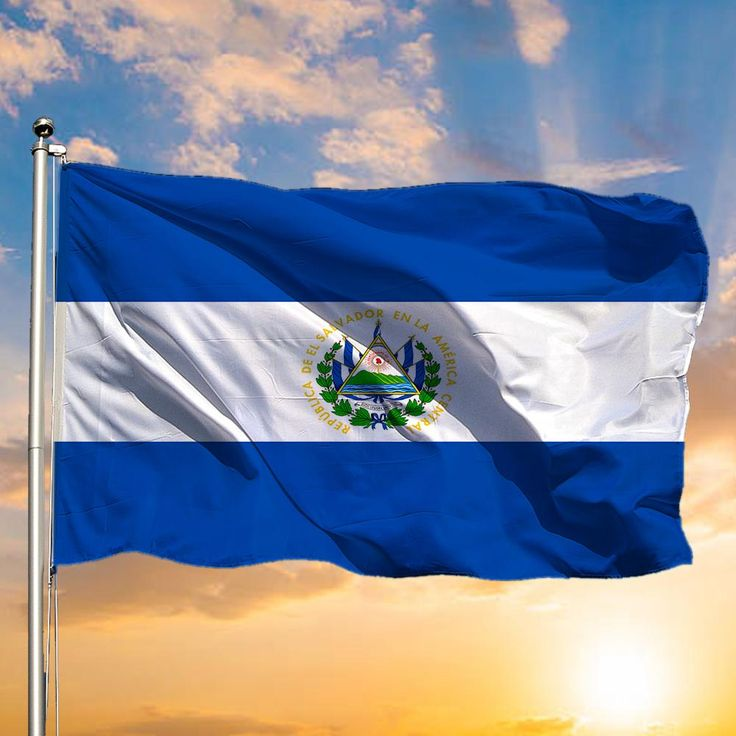
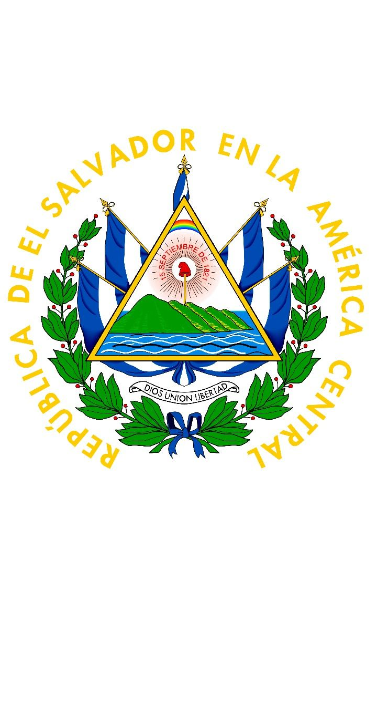
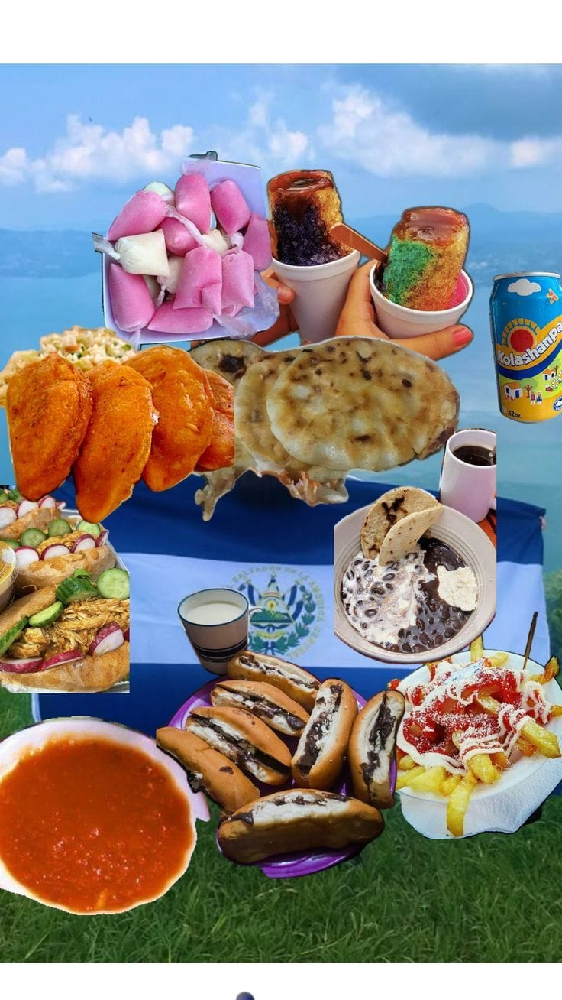
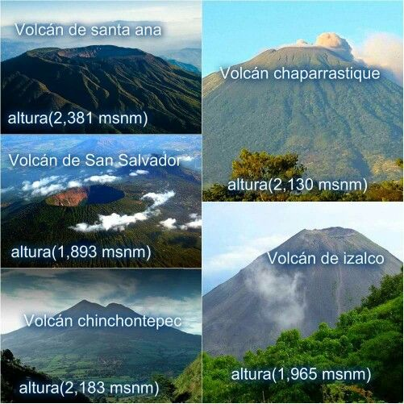
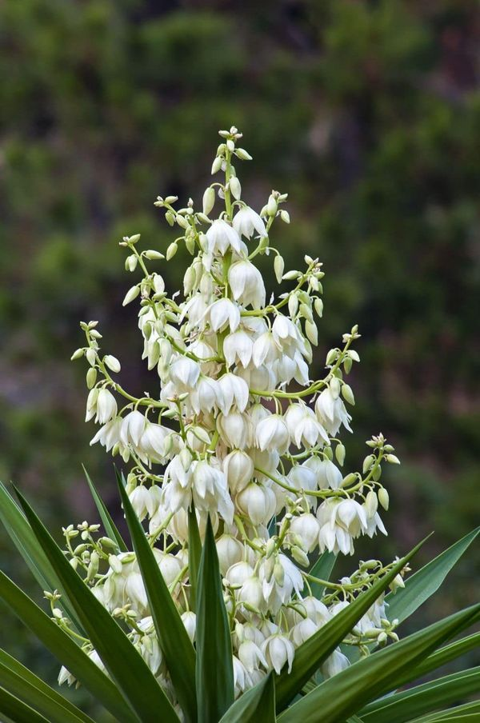
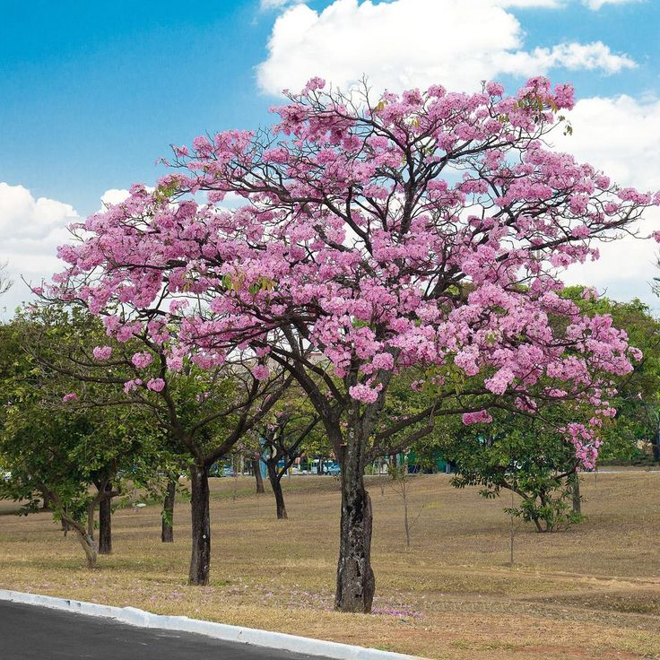
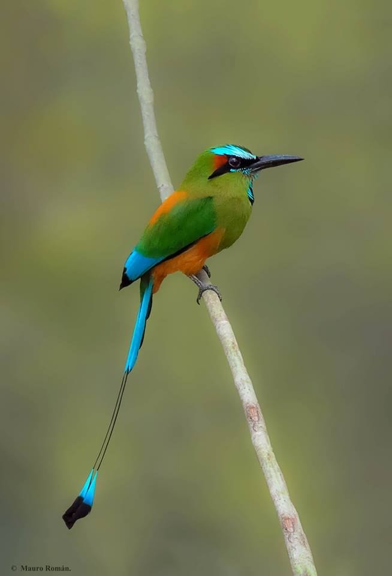
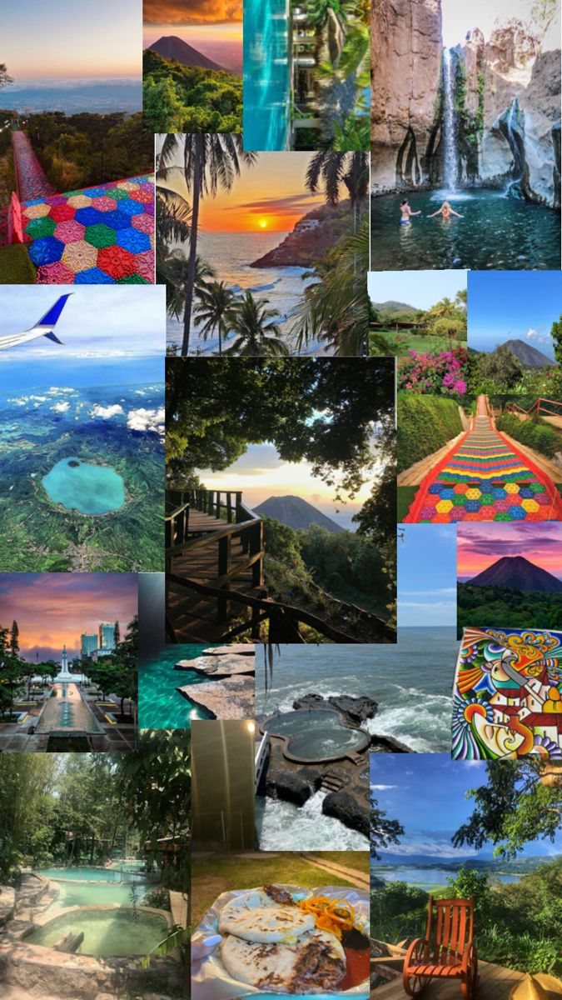
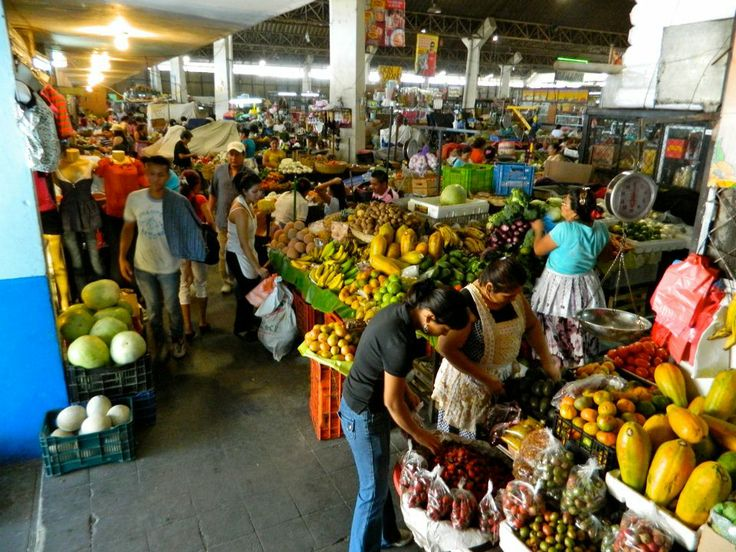
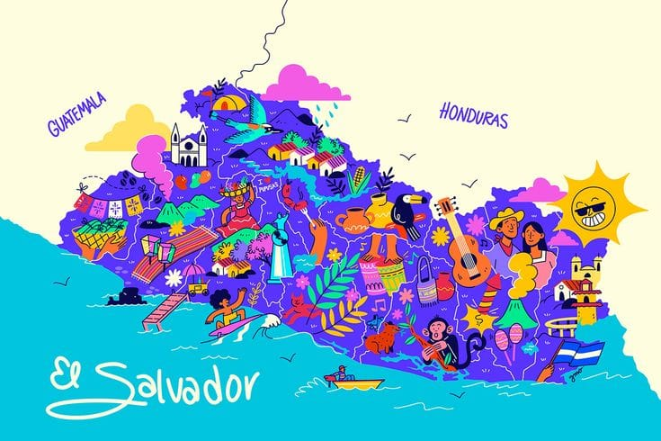

BANDERA
Símbolo de la unidad nacional, representa los valores de la libertad, la justicia y la fraternidad.
ESCUDO NACIONAL
Es el símbolo de la nación, representa el esfuerzo y la lucha de nuestro pueblo por la libertad y la independencia.
PLATOS TIPICO
La gastronomía de El Salvador es un deleite sencillo, sabroso y profundamente arraigado en el maíz, que es el corazón de su cocina. Es una fusión de tradiciones indígenas y sabores que evocan el calor del hogar.La comida salvadoreña es un abrazo de sabor, donde cada bocado te cuenta la historia de su tierra.
VOLCANES
Estos gigantes naturales no solo definen el relieve salvadoreño, sino que son destinos turísticos ideales para el senderismo y para admirar la belleza natural del país
FLOR NACIONAL
La flor de Izote es la flor nacional de El Salvador, un símbolo de la belleza y la riqueza natural del país.
ÁRBOL NACIONAL
El árbol de Maquilishuat es el árbol nacional de El Salvador, un símbolo de la belleza, la fuerza y la resistencia de nuestro país.
AVE NACIONAL
El Torogoz es el ave nacional de El Salvador, un símbolo de la paz y la libertad.
PAISAJE

Desde las playas del Pacífico hasta las montañas verdes, El Salvador ofrece un contraste de paisajes que te dejarán sin aliento. Un paraíso para los amantes de la naturaleza.
ATRACCIONES
Explora ruinas mayas como Joya de Cerén, surfea en La Bocana, o recorre la Ruta de las Flores. ¡Hay una aventura esperando en cada rincón!
MERCADO
Los mercados salvadoreños son el corazón de la vida local. Aquí encontrarás artesanías, frutas frescas y la auténtica calidez de su gente. Una explosión de colores y sabores.
MAPA
A pesar de ser el país más pequeño de Centroamérica, su mapa encierra una inmensa concentración de cultura, volcanes y playas. Todo al alcance de la mano.
EL SALVADOR

El Salvador es mucho más que sus símbolos; es un país con gente resiliente, una rica historia y un futuro brillante. Descubre la magia de "Dios, Unión y Libertad".